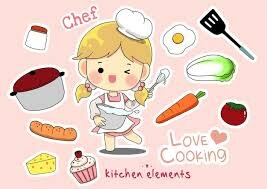

opinion is that cooking is the best hobby to have, because it can be very useful in life. Cooking is my hobby and has been for several years.

There are so many reasons I love to cook, cooking is one of those things that just comes naturally for me, and I think I inherited,
because I can cook almost anything and nail it on the first try, much like my grandmother.
But the main reason I love to cook is because it keeps me stress free. For example when I am cooking I have very little time to think, because the cooking is challenging my mind and taking my mind off the stress of everyday life.
Why Should You Learn to Cook?
It’s never too late to learn how to cook. Whether we say we can’t be bothered or just don’t have the time, we always make excuses for why we don’t learn cook.
Cooking starts by doing the shopping and rather than buying ready-made meals, getting ingredients, peeling, slicing, and roasting them in order to end up with a meal worth eating.
Why should you bother?
Eat better: prepared meals are often full of salt and additives that are bad for your health.
Eat less: when you cook your own food, you tend to eat less once you get to the table. By trying the food while you’re making it, you can trick your stomach into thinking you’ve eaten. Try it out for yourself.
your friends: Asian food, gazpacho, ravioli, or desserts, who doesn’t love going round their friends’ place for a meal?
more time with your loved ones: good meals can bring everyone together. So turn off the TV, get your ingredients ready, and get ready for a good meal!
I LOVE MUSIC
Listen and Understand the Music You're Going to Write About. ...
Research the Background Information About the Music. ...